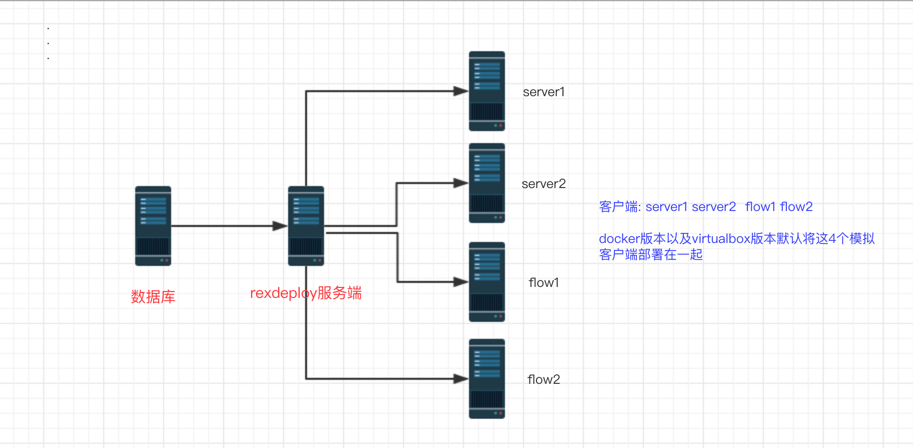

安装
该自动化平台只需要安装MYSQL以及perl语言对应的模块，甚至不安装MYSQL也可以使用大部分的功能，开箱即用。
本文主要列举三种快速安装方式，一是docker，二是vitualbox，三是基于centos系统脚本一键安装，其他操作系统的安装方式，请参照本章节1.3.4 其他操作系统。安装完成之后即可测试使用。如若需要自定义参数，或者添加服务器群组请参见 1.3.5 配置。
docker安装方式: 请参照本章节 1.3.1 Windows
vitualbox+vagrant和vitualbox安装方式: 也请参照本章节 1.3.1 Windows
docker的安装方式和vitualbox安装方式也同样适用于其他的操作系统，如果想快速体验，建议使用docker安装或者vitualbox的方式安装使用。
说明
docker的安装方式和vitualbox安装方式默认带了4个模拟客户端，其他的安装方式只安装核心应用，4个模拟客户端只是方便测试使用，对应用安装没有影响。（因为docker和virtualbox版本包含了jdk,4个tomcat等模拟客户端程序，所以docker版本和virtualbox版本的包都比较大，有1G以上的安装包，仅体验核心应用的话，可以试用centos平台安装）
4个模拟客户端信息
| 序号 | 唯一名字 | 服务名 | 地址 | 应用类型 | 配置文件路径 | 工程文件路径 | 进程关键词 | 应用启动脚本 | 分组名称 | 状态 |
|---|---|---|---|---|---|---|---|---|---|---|
| 1 | server1 | 后台服务集群1 | 127.0.0.1 | tomcat | /data/www/config1 | /data/www/html1 | tomcat-server1 | /etc/init.d/tomcat-server1 | server | 2 |
| 2 | server2 | 后台服务集群2 | 127.0.0.1 | tomcat | /data/www/config2 | /data/www/html2 | tomcat-server2 | /etc/init.d/tomcat-server2 | server | 2 |
| 3 | flow1 | 调度服务集群1 | 127.0.0.1 | tomcat | /data/www/flow1/WEB-INF/classes/ | /data/www/flow1 | tomcat-flow1 | /etc/init.d/tomcat-flow1 | flow | 1 |
| 4 | flow2 | 调度服务集群2 | 127.0.0.1 | tomcat | /data/www/flow2/WEB-INF/classes/ | /data/www/flow2 | tomcat-flow2 | /etc/init.d/tomcat-flow2 | flow | 1 |
更多关于客户端数据请参考数据库章节